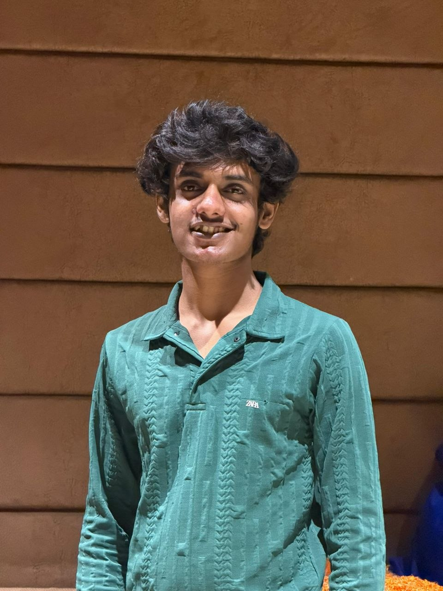

Hi, I'm
I enjoy building something impactful.
Hello,
I’m Shivanshu Prasad Pandey,
an undergraduate student at NIT Rourkela pursuing Mining Engineering, It might sound a little a different from my major but I like to make impacful & cool tech stuff with my mind, curiosity and laptop(my best friend). I enjoy solving algorithmic problems and building practical software that helps me understand how systems work under the hood.
I primarily work with C++, C, Python, JavaScript, and SQL, and have explored areas including data structures and algorithms, web development, backend systems, databases, and Linux. Currently, I’m focused on strengthening my problem-solving skills, developing deeper backend and systems knowledge, and building technical projects that go beyond simply using existing tools.
I’m also actively preparing for software engineering internships while continuously learning, experimenting, and turning ideas into working projects.